Pooled trucks and cold rooms for smallholder farmers, booked by USSD —
like Uber for the truck, Airbnb for the cold room.
IDEA STAGEDEMO USES SAMPLE DATA
This submission describes a proposed concept and includes a static,
clickable demo built to make the idea concrete. No real farmers,
pilots, partners, or results exist yet — everything in this document
is illustrative.
Submitted by: AikiTechLabs
The Problem
Smallholder farmers growing perishable crops like tomatoes and peppers
often harvest too little on their own to justify hiring a full truck
or booking a full cold room. While they wait — hoping to scrape
together enough, or hoping a buyer comes — their produce spoils or
ends up sold at a loss to whoever is nearby. HarvestRelay lets
neighboring farmers pool their harvests together so they can share
one truck or one cold room and split the cost fairly, by crate.
How It Works — 6 Steps
HarvestRelay is designed around a basic phone and a USSD menu (the
kind reached by dialing a short code), backed by SMS — no app, no
data plan, no smartphone required. Here is the flow, step by step:
Dial USSD. A farmer (or her village agent) dials a short code, picks her crop, crate count, harvest week, and whether she wants a shared truck or a shared cold room.
Join a pool. Her request is grouped automatically with neighbors in the same village cluster who have the same crop, same harvest week, and same service need, into one shared "pool."
Provider quotes invited. Once the pool reaches a sample fill threshold, nearby truck owners or cold-room operators are invited — by SMS and a simple web dashboard — to submit a price and pickup day.
Agent accepts, SMS cost-share sent. The village agent (a trusted local coordinator) reviews the quotes and accepts one on the group's behalf. Every farmer in the pool then gets an SMS with her own share of the cost, split fairly by crate count, and the pickup day.
Pickup + SMS receipt. On pickup day, the provider collects the crates from everyone in the pool. Each farmer receives a final SMS receipt confirming what was collected and what she owes.
Early warning if a pool doesn't fill. Perishable crops can't wait forever — if a pool is still short of its threshold close to the end of the harvest week, farmers are told early and given simple options (wait a little, accept a smaller partial load, merge with a nearby pool, or go it alone), instead of being left stranded.
This is a summary. The full step-by-step message sequence between the
farmer's phone, the SMS gateway, the pooling logic, and the database
is diagrammed in the Architecture section later in this document.
A Farmer's Journey — Amina Tanko (Illustrative Scenario)
This is a fictional, illustrative walkthrough using sample data from
the HarvestRelay demo. No real farmers, villages, pilots, or partners
are involved — the names below ("Amina Tanko," "Dagiri Cluster") are
invented for storytelling purposes only, and the numbers come
straight from the demo's sample dataset.
Amina Tanko grows tomatoes on a small plot near Dagiri, in a cluster
of villages too far from the market for any single farmer to justify
hiring a truck. This week she has harvested 15 crates
— not enough on her own to fill a lorry, but enough to be worth
pooling with her neighbors. She doesn't have a smartphone, just a
basic handset. Here is how HarvestRelay gets her tomatoes to market.
1–2. Dialing in and telling the system how much she has
Amina dials the USSD short code her village agent gave her, selects her village cluster (Dagiri Cluster) and crop, then enters her crate count and harvest week. She's asked whether she wants to share a truck or a cold room — tomatoes move fast, so she picks the truck pool.
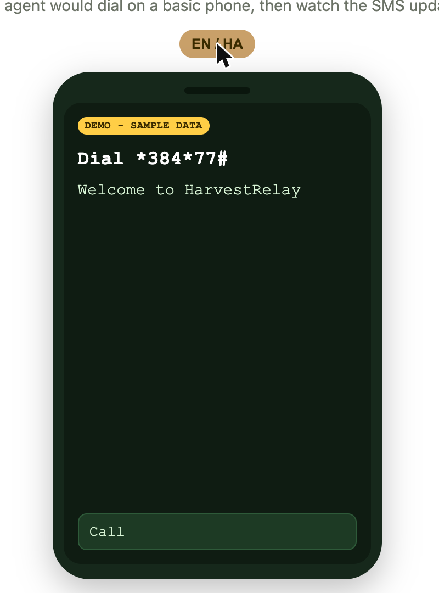
The USSD welcome screen a farmer sees after dialing *384*77# on a basic phone.
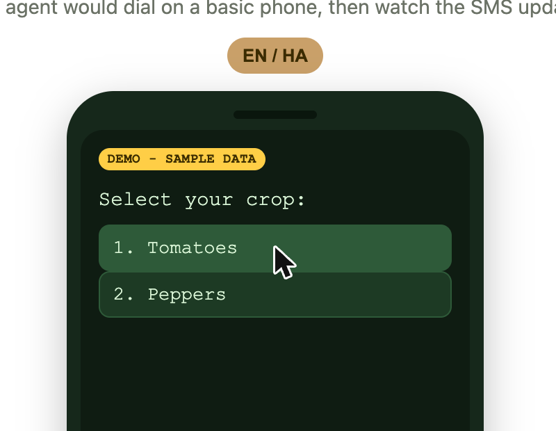
Choosing a crop — Amina selects Tomatoes.
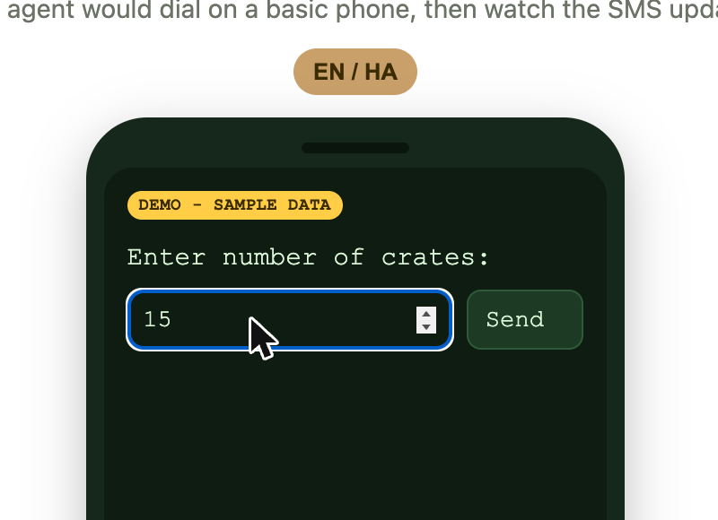
Amina enters 15 crates into the USSD form.
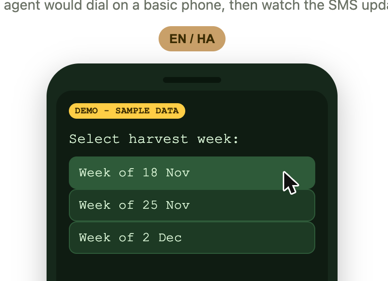
Selecting her harvest week.
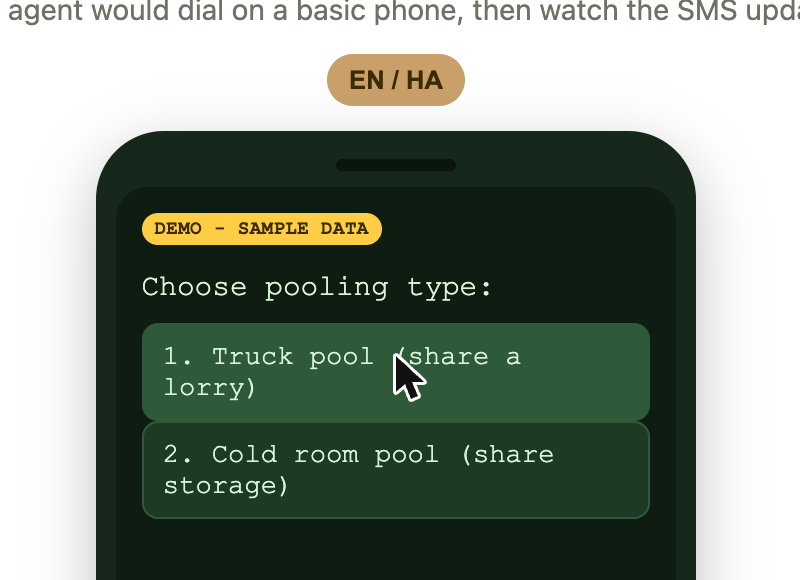
Choosing a shared truck pool vs. a shared cold-room pool.
3–4. Joining the pool, then watching it fill
After confirming her details, Amina joins the pool — she's now one of several farmers in the Dagiri Cluster truck pool, which already has 165 of the 200 crates it needs. Over the next day, more farmers join in until the pool reaches its 200-crate threshold; the village agent watches this happen in real time on the Agent dashboard.
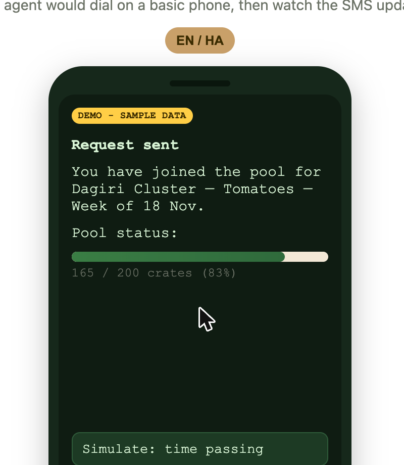
Confirmation that Amina's request joined the pool, with a live progress bar showing 165/200 crates.
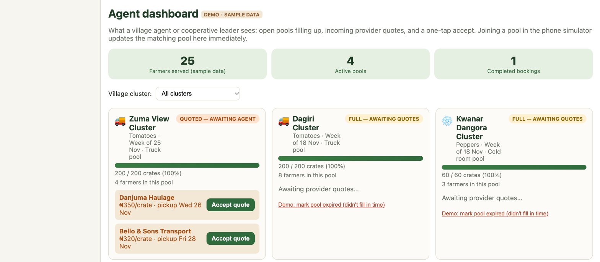
The agent dashboard showing the Dagiri Cluster pool at 200/200 crates (100%), alongside other pools at various stages.
5–6. A truck owner sends a price, the agent accepts
Danjuma Haulage, a local truck operator, checks the provider page and sees the now-full Dagiri Cluster pool is ready for a quote. He submits his price per crate and proposes a pickup day. Back on the agent dashboard, the village agent sees the quote come in and accepts it with one tap.
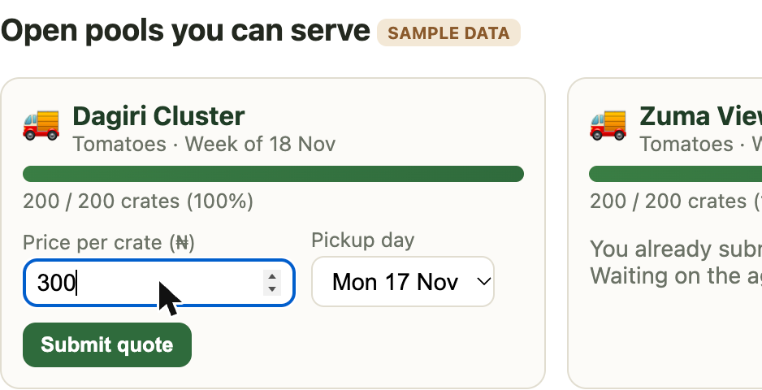
A truck operator filling in a price-per-crate and pickup day to submit a quote for the full pool.
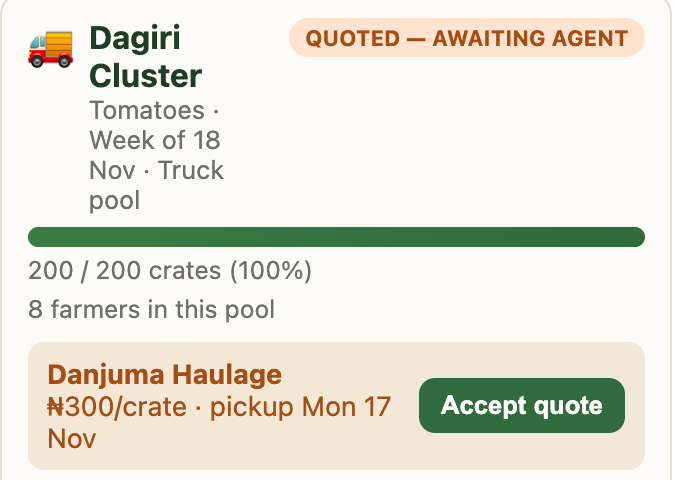
The agent dashboard showing the incoming quote (₦300/crate, pickup Mon 17 Nov) with the Accept button.
7–8 & bonus: her SMS, her receipt, and the Hausa toggle
Within moments, Amina's phone buzzes with a text message telling her who's collecting, when, and her share of the cost; she replies "1" to confirm. On pickup day, the truck collects the crates from everyone in the pool, and Amina's phone receives one last SMS — her receipt. Because many farmers in these clusters are more comfortable in Hausa, every USSD screen can also toggle language with one tap.
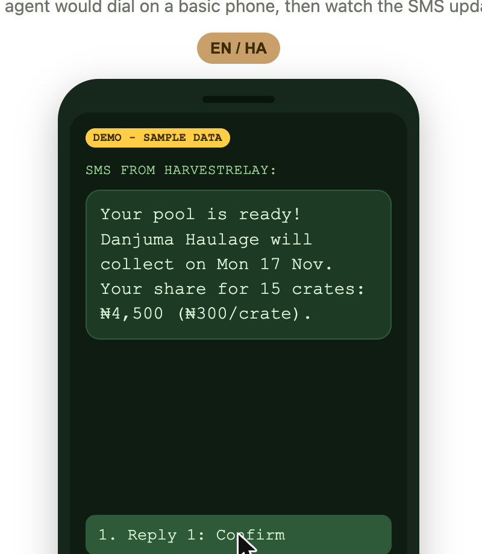
SMS confirming the pool: Danjuma Haulage collects Mon 17 Nov; Amina's share for 15 crates is ₦4,500.
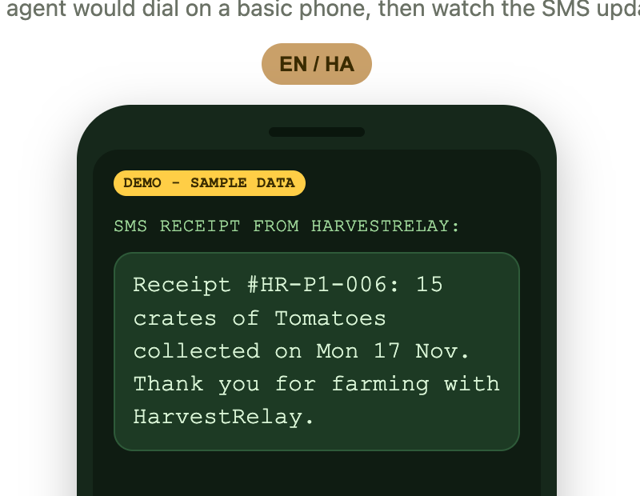
Final SMS receipt confirming 15 crates collected, with a receipt number.
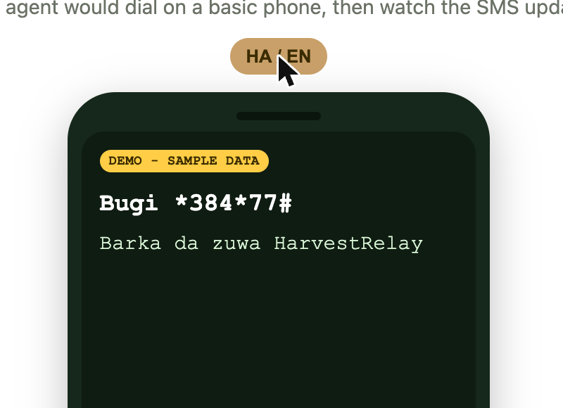
The same USSD welcome screen shown in Hausa, demonstrating the built-in EN/HA toggle.
USSD Menu Tree
HarvestRelay's primary interface is a USSD menu — reached by dialing
a short code on any basic phone, no app or data plan needed. The menu
is deliberately shallow (at most five steps to confirming a pool
join) since USSD sessions can time out. After joining, the farmer
isn't left guessing — an SMS confirms it immediately, and more follow
automatically at each later stage.
System Architecture
HarvestRelay is designed primarily around USSD and SMS, since most
farmers carry basic phones with little or no data access. A web
dashboard exists alongside this for village agents and providers, who
are more likely to have smartphone or desktop access. HarvestRelay
itself owns no trucks and no cold rooms — it is purely a coordination
layer, matching existing local capacity to pooled demand, the way a
ride-pooling or short-stay marketplace matches supply to demand
without owning the vehicles or the rooms.
One Gateway and one API Layer handle both farmer-facing USSD/SMS
traffic and agent/provider dashboard traffic, so the same
role-based access rules and data handling apply no matter which
channel someone uses.
Sequence Diagram — One Booking, End to End
The diagram below walks through a single illustrative example pool
from the first farmer request through to the final SMS receipt,
matching the 6-step summary earlier in this document but showing
every message passed between components.
Data Model
Underneath the USSD menus and dashboard sits a simple set of records:
who the farmers, agents, and providers are, what each farmer is
asking for, how requests group into a pool, and what happens once a
provider's quote is accepted. A farmer's cost share on her receipt is
always calculated as her crate count divided by the pool's total
crates, multiplied by the quoted price — she only ever pays for her
share of the truck or cold room, never the whole cost.
Pooling Rules
The numbers below are sample, illustrative thresholds
picked to make the concept concrete — not measured truck capacities,
real cold-room sizes, or figures from any pilot or partner. A real
deployment would set these per actual vehicle/facility capacity and
local agreement.
How a pool is formed
Every request gets grouped into a pool using four things, all of which must match:
Village cluster — farmers close enough that one truck route or cold room works for everyone.
Crop — e.g. tomatoes and peppers are pooled separately, since they may need different handling.
Harvest week — grouped by the week the crop will be ready, since perishable crops can't wait months.
Service type — truck pooling and cold-room pooling are separate pools.
Sample fill thresholds
Service type
Sample threshold
Why (illustrative reasoning)
Truck (full truckload)
200 crates
A rough stand-in for "one truck's worth" of crates on a local route.
Cold room (minimum booking)
80 crates
A rough stand-in for "worth reserving cold-room space for one cluster's harvest."
Once a pool fills
HarvestRelay invites nearby providers to quote a price and pickup day.
The village agent reviews and accepts one quote on the group's behalf
(or farmers vote — a village-level choice, not dictated by the app).
Every farmer then gets an SMS with her own cost share and pickup day.
If a pool doesn't fill in time
Every pool has a cut-off tied to the harvest week — for example
(illustrative), evaluated two days before the week ends. If still
below threshold, farmers are told early and offered simple choices:
wait a little longer, accept a smaller partial load at a higher
per-crate cost, merge with a neighboring cluster's pool, or cancel and
arrange her own transport — HarvestRelay never blocks or penalizes
that last option.
Fairness principle
No farmer is ever charged for more than her own share. The cost of
one truck trip or cold-room booking is split proportionally by crate
count across everyone in the filled pool — nobody subsidizes anybody
else, and nobody pays for capacity she didn't use.
Privacy by Design
HarvestRelay's users are mostly reached over basic phones, USSD, and
SMS, often with little exposure to formal data-protection concepts.
That makes two things especially important: collecting as little as
possible, and explaining things in plain language a farmer can
actually understand over a phone menu.
Minimal data collection. Only what's needed to run a pool and get a farmer paid and picked up fairly: name, phone number, village cluster, crop, crate count, harvest week, language. Never collected: national ID, bank/mobile-money credentials, farm size or land records.
Consent on first use. The first time anyone dials in, a short plain-language message explains what's collected and why, and asks "Continue? 1. Yes 2. No" before anything is saved. Consent is timestamped, not assumed.
Role-based access. Farmers see only their own requests, pool status, and receipts. Agents see pool-level data only for clusters they coordinate. Providers see only the pools they're invited to quote. Admin access is a responsibility, not a default — it's logged and limited.
Encryption in transit and at rest. Traffic between system components would run over encrypted connections; stored records would be encrypted at rest. No sensitive financial credentials are ever requested over USSD/SMS, since that channel isn't end-to-end encrypted at the handset.
Limited retention. Active pooling data is kept only as long as needed to run the current season plus a reasonable dispute window. A farmer who asks to stop using the service has her data deleted or anonymized beyond what's legally required. Data is never sold or shared with third parties.
Plain-language summary we'd tell a farmer: "We only ask for what we
need to group your harvest with your neighbors' and get you paid
fairly. We ask your permission the first time. Only the right people
see your information. We keep your data safe and don't keep it
longer than we need to."
These are proposed principles for the hackathon design — no system
has been built, no data has been collected, and there are no real
users yet. They describe a commitment for how the system should be
built, not a report on what has been implemented.
Roadmap
FUTURE PLAN — NOT WORK ALREADY DONE
Everything below is an illustrative future plan. None of it has
happened yet; HarvestRelay today is a concept and a static demo only.
1Validate with real conversations. Interview farmers, village agents, and truck/cold-room providers to check whether the pooling thresholds and pricing assumptions used in this concept actually match local conditions — and adjust them accordingly.
2Build a first working version. Replace this static demo with a real USSD/SMS integration through a telecom aggregator, and a working backend implementing the pooling logic described in this document.
3Run a one-season pilot. Partner with one willing cooperative in one village cluster for a single harvest season, to see whether the pooling mechanic works in practice for real farmers and a real provider.
4Wider rollout, if justified. Only expand beyond the pilot if it shows real cost savings and real farmer adoption — not before.